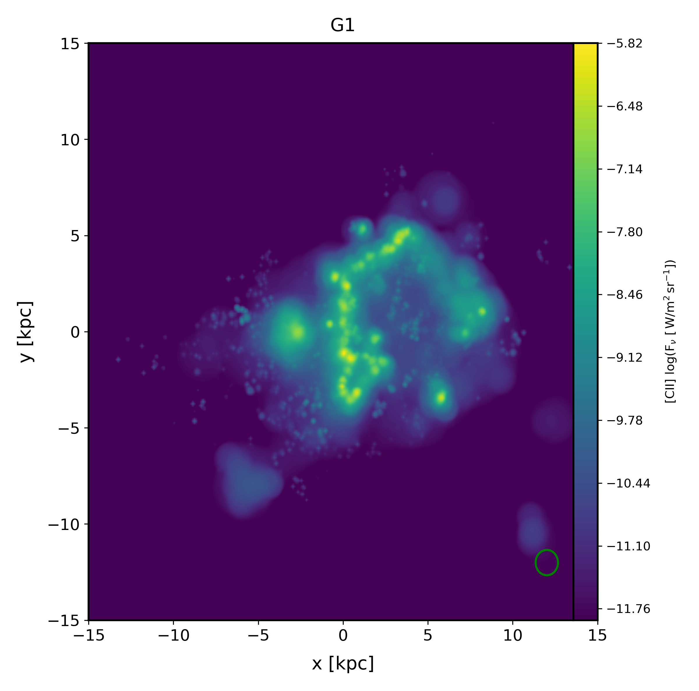

Tutorials¶
… or how to:
Plot histogram of certain quantity¶
The following commands allows the user to plot histograms of several galaxies in one plot:
import sigame as si
si.plot.histos()
This function will ask the user several questions to determine what to plot and for example whether the histograms should be mass-weighted or plain numbers. By hitting enter to all answers and thereby selecting the default values, the following figure should appear which is a histogram of gas particle masses in the original galaxy data:
Plot moment 0 map of a line¶
Note
The release version comes with one test galaxy and all the tools to create datacubes with line emission at z=0 for the following lines; [CII]158 and [NII]205. For other redshifts, please contact us. At least one datacube must exist in order to create a moment 0 map.
To create a [CII] moment 0 map, use the following commands:
import sigame as si
si.plot.map_line()
And this image should appear as default:
To change the settings (extent in kpc, line ID, units on map), see documentation of this function here.